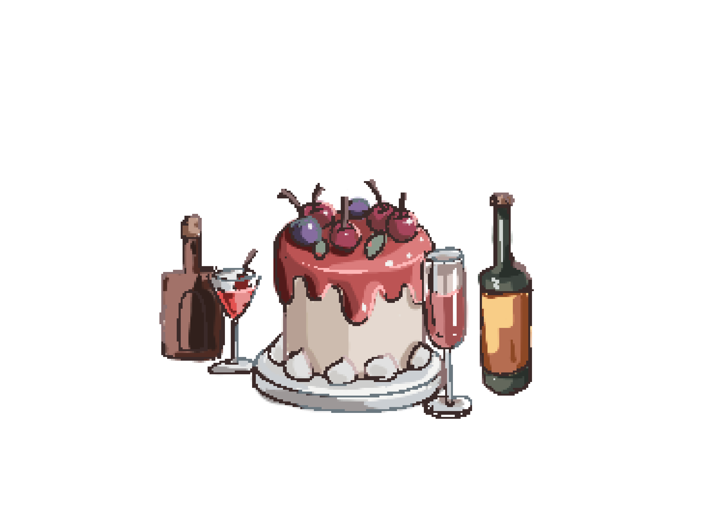

Q1.你和朋友一同來到了一場聚會，對方因為遇到熟人而暫時離開了你。
你正無聊的四處張望，一個特別的身影卻抓住了你的目光，他是...
還沒看到人影，就先聽到那宏亮的聲音。
你朝聲音的來源望去， 直直地對上了那人燦爛的笑容。
與素不相識的你對到了眼，對方也不覺尷尬，只是維持著陽光般的笑容與你對視。
在吵雜的聚會當中，卻有一塊格外清靜的角落。
那人帶著單邊的藍芽耳機， 雖然人仍在這個熱鬧的聚會之中，實際上卻偷偷潛入了在自己的小宇宙。只有在朋友路過cue他幾下的時候才會出聲。
一個身影從門口倏地跑了進來，原來是幫喝吐了的同學買水去的人!
那人一邊照顧著身體不適的同學，一邊管理朋友們的秩序，讓大家不要因為喝嗨了而做蠢事。
你瞥見了一道好看的身影而猛地轉身，原來是一面鏡子!
你不禁站在鏡子前，好好的欣賞了為聚會打扮了的自己。